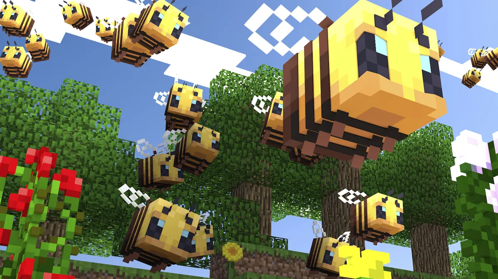
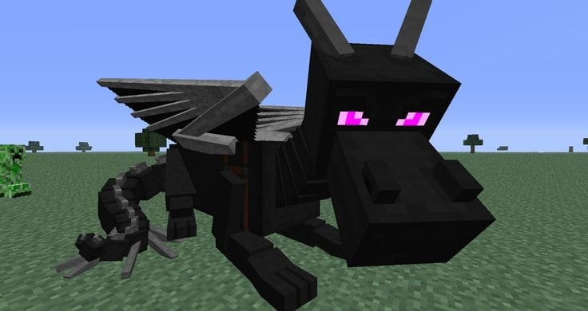
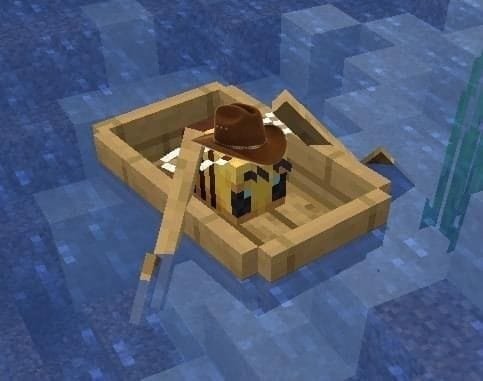

Minecraft

Historia breve de Minecraft

Minecraft es un videojuego de construcción de tipo mundo abierto o en inglés sandbox creado originalmente por el sueco
Markus Persson (conocido comúnmente como Notch), que creo posteriormente Mojang Studios (actualmente parte de Microsoft).
Está programado en el lenguaje de programación Java para la versión Java Edition y posteriormente desarrollado en C++
para la versión de Bedrock Edition. Fue lanzado el 17 de mayo de 2009, y después de numerosos cambios, su primera versión
estable fue publicada el 18 de noviembre de 2011.
Un mes antes del lanzamiento de su versión completa se estrenó una versión para dispositivos móviles llamada Minecraft:
Pocket Edition en Android, y el 17 de noviembre del mismo año fue lanzada la misma versión para iOS, aunque posteriormente
esta pasaría a ser Minecraft: Bedrock Edition. El 9 de mayo de 2012 fue lanzada la versión del juego para Xbox 360 y PS3.
Todas las versiones de Minecraft reciben actualizaciones constantes desde su lanzamiento. En octubre de 2014, Minecraft lanzó
su edición para PlayStation Vita, desarrollada por Mojang y 4J Studios. Esta versión presenta las mismas actualizaciones y
similares características que las otras versiones de consola; además, cuenta con el sistema de venta cruzada, es decir que al
comprar la versión de PlayStation 3 se obtiene también la de PlayStation Vita. A marzo de 2023 se habían vendido más de
238 millones de copias, siendo actualmente el videojuego más vendido de la historia.
El 15 de septiembre de 2014, fue adquirido por la empresa Microsoft por un valor de 2500 millones de dólares estadounidenses.
Este suceso provocó el alejamiento de Markus Persson de la compañía. En noviembre de 2016, Microsoft anunció el lanzamiento
de la versión completa de Minecraft: Education Edition.
Criaturas

Una criatura (mob, derivado de mobile, en inglés) es una entidad viviente en el juego, que puede desplazarse, realizar
acciones y recibir o infligir daño. Los diferentes tipos de criaturas a menudo tienen una IA y un botín único.
A continuación hablaremos de los tipós de criaturas, su comportamineto y su clasificación.
Tipos
Existen varios tipos de criaturas:
- Pasivas
- Neutrales
- Hostiles
- Jefes
Pasivas:
Las criaturas pasivas son aquellas que no atacan al jugador directamente, incluso cuando son provocadas o atacadas.
Neutrales:
Las criaturas neutrales son criaturas que pueden ser a veces pasivas y a veces hostiles hacia el jugador. Varias se vuelven hostiles al ser atacadas primero, pero otras pueden ser naturalmente hostiles y luego volverse pasivas en ciertas condiciones.
Hostiles:
Las criaturas hostiles son criaturas agresivas que siempre atacan al jugador a la vista.
Jefes:
Las criaturas jefe son criaturas hostiles especiales más peligrosas y fuertes que otras criaturas. No se generan al azar y se enfrentan intencionalmente. También tienen una barra de jefes con su nombre y salud.
Comportamiento
Cada tipo de criatura en Minecraft tiene un sistema IA (Inteligencia artificial) con diferentes comportamientos y mecánicas. Ordinariamente deambulan aleatoriamente si hay un jugador cerca y usualmente evitan caer sobre bloques lo suficientemente altos para causarles daño.
Sin embargo, algunas tienen un avanzado sistema de caminos que les permite pasar laberintos complejos para conseguir un objeto deseado o destino:
- Las criaturas pasivas huirán en direcciones aleatorias después de ser dañadas.
- Las criaturas hostiles atacarán y perseguirán al jugador tan pronto como ellos se acerquen.
- Las criaturas neutrales permanecerán neutrales alguna entidad los provoque (usualmente atacándolas); en ese punto la criatura se comporta de manera hostil y atacará a la entidad que la golpeó.
- La mayoría de las criaturas pueden ver y/o escuchar a los jugadores a una distancia de 16 bloques, pero otras pueden ver aún más lejos.
Clasificación
No muertos:
Este grupo de criaturas incluye: Ahogados, Zombis desérticos, Fantasmas, Esqueletos, Caballos esqueleto, Esqueletos glaciales, Withers, Esqueletos del Wither, Zoglins, Zombis, Caballos zombi, Aldeanos zombi y Piglins zombificados. Estas criaturas son dañadas por pociones de curación, curadas por pociones de daño y son inmunes al ahogamiento (excepto zombis y zombis desérticos) y daño por veneno. Los zombis, aldeanos zombis, ahogados, esqueletos, esqueletos glaciales y fantasmas arden cuando están bajo la luz solar directa, a menos que estén tocando el agua o usando un casco. Bajo el efecto de una pociones de resistencia al fuego, las criaturas no-muertas todavía se incendian con la luz solar directa, pero no reciben daño. Todas las criaturas muertas vivientes, excepto ahogados, fantasmas y Withers, se hunden en el agua. Todas las criaturas muertas vivientes reciben daño adicional de las armas encantadas con Castigo y el Wither las ignora.
La mayoría de las criaturas no muertas tienen la capacidad de recoger objetos. Algunos pueden aparecer con armadura o con herramientas o armas.
Acuaticos:
Este grupo de criaturas incluye Ajolotes, Delfines, Calamares, calamares luminosos, Guardianes, Guardianes ancianos, Tortugas, Bacalaos, Salmones, Peces globo y peces tropicales. Reciben daño extra de tridentes encantados con Empalar, (solo en Java) y no hace que el pez globo se infle ni se dañe. Todas las criaturas de agua, excepto los delfines, son inmunes a ahogarse, y todas, excepto los guardianes, los guardianes ancianos y las tortugas, sufren daños por asfixia si están fuera del agua durante demasiado tiempo. Las criaturas de agua tienen la capacidad de nadar, mientras que otras simplemente flotan en el agua o se hunden.
Artropodos:
Este grupo consta de criaturas basadas en los artrópodos, incluye: Abejas, Arañas de cueva, Endermites, Lepismas, y las Arañas. Reciben daño adicional y reciben el efecto lentitud IV cuando son atacados con armas encantadas con Pesadilla de los artrópodos. Ambos tipos de arañas son inmunes a los efectos del veneno. Los lepismas infestan bloques.
Maldeanos:
Este grupo incluye Saqueadores, Ilusionistas, Evocadores, y Vindicadores. Son inmunes a los colmillos de evocador e ignorado por vindicadores con nombre "Johnny". Son hostiles a los aldeanos, vendedores ambulantes, golems de hierro y jugadores. Las brujas, los devastadores y los vexes pueden acompañarlos en los asaltos. Los ilusionistas y las brujas (solo en Bedrock Edition) pueden ver jugadores u objetivos a través de bloques.
Sorpresa
Picale a las ranas y veras una sorpresa

